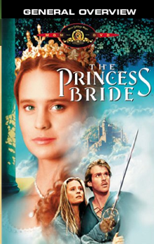

- STARRING
- Cary Elwes, Robin Wright, Andre the Giant, Mandy Patinkin
- DIRECTOR
- Rob Reiner
- PRODUCER
- Arnold Scheinman, Rob Reiner
- SCREENWRITER
- William Goldman
- RATING
- PG
- RELEASE DATE
- September 25, 1987 (USA)
- RUNTIME
- 98 min
- SYNOPSIS
- Director Rob Reiner breathes vividly colored cinematic life into William Goldman's THE PRINCESS BRIDE, effectively evoking the wondrous, wide-eyed spirit of the witty 1973 novel.
- RELEASE COMPANY
- 20th Century Fox
"One of Reiner's most entertaining films, effective as a swashbuckling epic, romantic fable, and satire of these genres."
emanuellevy.com
"Based on William Goldman's novel, this is a post-modern fairy tale that challenges and affirms the conventions of a genre that may not be flexible enough to support such horseplay."
Variety
"Rob Reiner's friendly 1987 fairy-tale adventure delicately mines the irony inherent in its make-believe without ever undermining the effectiveness of the fantasy."
Chicago Reader
"One of the Top films of the 1980s, if not of all time. A treasure of a film that you'll want to watch again and again."
Moviehole
"An effective comedy, an interesting bedtime tale, and one of the greatest date rentals of all time."
Film Threat
"The lesson it most effectively demonstrates is that cinema has the power to turn you into a kid again. As we wish."
Arizona Daily Star
"My name is Marty Stepp. You killed my father. Prepare to die."
Step by Step Publishing